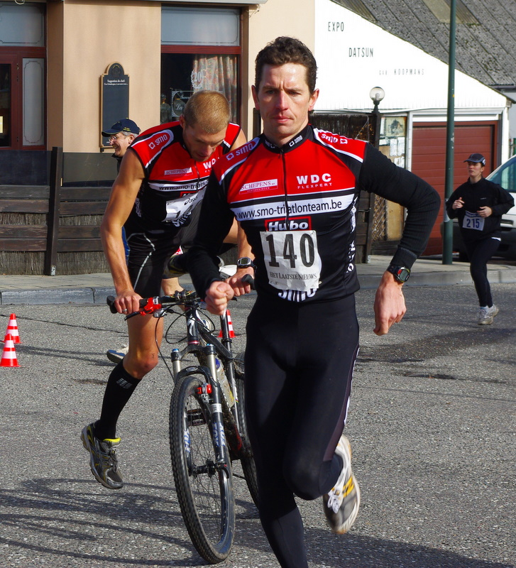

Zaterdag 27 februari stonden Michael Dewilde en Joury Gokel aan de start van het BK Run & Bike te Neder over Heembeek. 15 Kilometer Run en Bike op een geaccidenteerd parcours, waar het soms voor de mountainbiker zwaarder was dan voor de loper om recht te blijven. Beiden wilden een intensieve looptraining afwerken, maar een lekke band na 3 km besliste er anders over. De 2 SMO-ers liepen/ fietsten toen op een derde stek. Toch maakten ze er nog een pittige training van, maar behaalden teleurgesteld de finish in 13e positie.